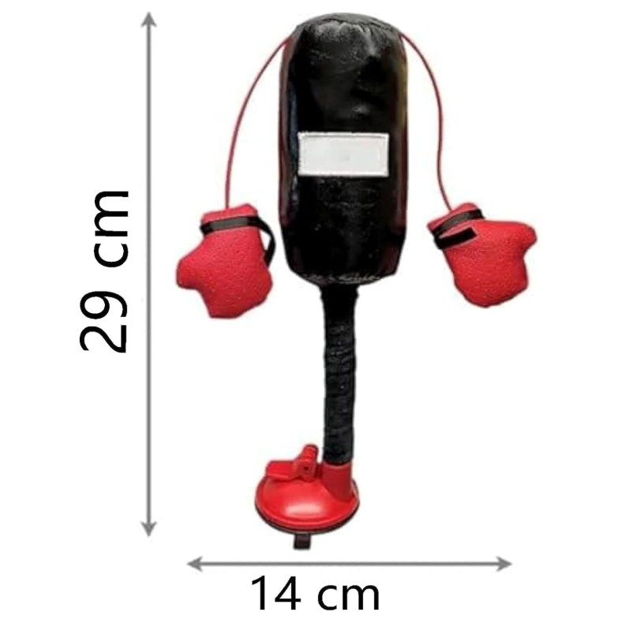
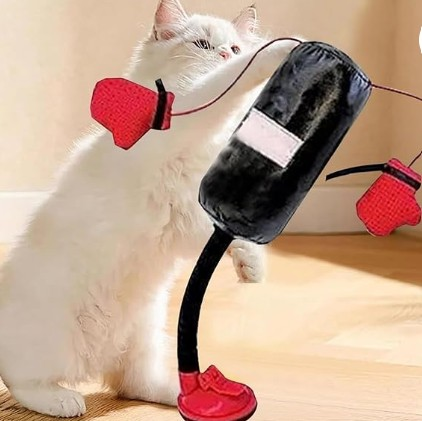

Dynamisk, stabil och hälsofrämjande
Om produkten
De fjäderbelastade boxhandskarna utför dynamiska hopp- och gungrörelser med variabel rotation. Dessa växlande rörelser väcker din katts naturliga jaktinstinkt, fängslar den i timmar av lek och verkar effektivt mot tristess i bostadskatter.
Integrerade klockor och sprakande element skapar spännande ljud som omedelbart lockar katter. Kattens boxningssäck är berikad med kattmynta och erbjuder visuell, akustisk och doftande stimulans för långvarig, varierad lekglädje.
Pris
1200 kr
Produktinformation
- Färg: Svart, röd
- Boxhandskar: 7 x 7 cm
- Höjd: 38 cm
- Förpackningsstorlek: 20 x 10 x 13,5 cm